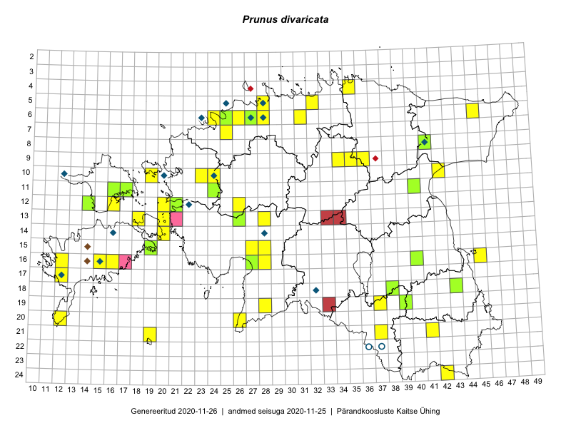

Prunus divaricata
Uuendatud: 2016-12-01
Kaardile koondatud taksonid: Prunus cerasifera Ehrh.; Prunus cerasifera var. divaricata (Ledeb.) Bailey; Prunus divaricata Ledeb.

Kaart põhineb 50 kirjel.
Kuvatud viited 20 esimesele andmebaasikirjele, ülejäänud PlutoFis
- Toomas Kukk, Eerik Leibak: 2015-07-29: 16-45: ala
- Toomas Kukk, Eerik Leibak: 2015-07-29: 16-45: GPS punkt
- Toomas Kukk: 2015-06-19: 06-27: ala
- Tiit Hallikma, Toomas Kukk: 2015-08-27: 12-21: ala
- Rein Kalamees, Kersti Püssa: 2015-09-13: 06-31: ala
- Thea Kull, Eerik Leibak: 2015-07-20: 06-45: ala
- Liina Oja, Ott Luuk: 2015-05-09: 13-28: GPS punkt
- Mari Reitalu: 2015-10-11: 17-12: GPS punkt
- Kadi Palmik, Helle Mäemets: 2015-07-21: 09-35: ala
- Timo Luhamäe, Liina Oja: 2015-05-14: 08-41: GPS punkt
- Elle Rajandu: 2015-07-20: 16-15: GPS punkt
- Oliver Parrest, Mari Reitalu: 2015-05-26: 20-12: GPS punkt
- Hanna-Eliisa Luts, Tõnu Ploompuu, Anna-Grete Rebane: 2015-07-19: 10-24: ala
- Jana-Maria Habicht, Ester Valdvee: 2015-08-15: 09-36: GPS punkt
- Tõnu Ploompuu: 2015-06-23: 12-26: ala
- Tõnu Ploompuu: 2015-06-06: 06-28: ala
- Sirje Lagle, Tõnu Ploompuu: 2015-05-15: 10-23: ala
- Rein Kalamees, Eerik Leibak: 2016-06-14: 24-42: ala
- Rein Kalamees, Eerik Leibak: 2016-06-14: 24-42: GPS punkt
- Silvia Pihu: 2015-07-01: 21-19: ala